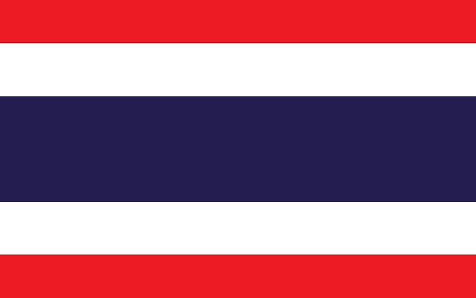

IBSF World Billiards Championship 2025
| world champions | |
|---|---|
| pankaj advani | billiards long-up |
| pankaj advani | billiards 150-up |
 muhammad asif
muhammad asif
|
men snooker |
|  Ploychompoo Laokiatphong | women snooker |
| Issara Kachaiwong | masters snooker |
| Kamal Chawla | men 6reds |
| Ng On Lee | women 6reds |
| HONG KONG CHINA | men team snooker |
| CHINA | women team snooker |
| bahrain | masters team snooker |
| Michal Szubarczyk | under-21 boys |
| Natasha Chethan | under-21 girls |
| Christian Richter | under-17 boys |
| FUTURE CHAMPIONSHIPS | view all | |
|---|---|---|
| 12-16 APR 2025 | World Billiards Championships 2025 | Carlow, Ireland |
| TBC | World Junior Snooker 2025 | TBC |
| 18-30 AUG 2025 | Mongolia World Cup of Snooker | Ulaanbaatar, Mongolia |
| 18-30 AUG 2025 | World 6Red Snooker 2025 | Ulaanbaatar, Mongolia |
| 03-15 NOV 2025 | World Snooker Championships 2025 | Doha Qatar |
| TWEETS |
|---|
WCBS Anti-Doping Seminar at IBSF Snooker Championships 2024
Following the success of the WCBS Anti-Doping Seminar held in India during the IBSF World Junior Snooker Championship, the IBSF once again hosted the WCBS Anti-Doping Seminar at the IBSF World Snooker Championship in Doha, Qatar. This seminar was aimed at senior athletes in the sport of billiards. ...
Asif Secures Medal for Pakistan with Dominant Quarter-Final Win
Two-time World Champion Muhammad Asif has guaranteed a medal for Pakistan after a commanding 4-1 victory over Mohamed Shehab of the UAE in a high-quality quarter-final match.
Georgiou Secures Medal for Cyprus in Thrilling Win Over Xiaolong Liang
Michael Georgiou of Cyprus has secured a medal for his country after a gripping 4-3 victory over China’s Xiaolong Liang in a match that lasted nearly three hours. The 2023 IBSF World 6-Red Champion fought back from a narrow loss in the first frame to claim the decisive win.
Top-8 at World Snooker 2024 Feature Talent from Africa, Asia, and Europe
Mahmoud El Hareedy of Egypt has secured his place in the quarter final of the 2024 IBSF World Men's Snooker Championship, after a hard-fought 4-3 victory over South Korea’s Yongjun Park.